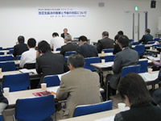

| 【日時】 |
11月16日（金）10:30～12:30 |
【場所】 |
コムナーレ９階 第15集会室 |
| 【参加者数】 |
57人（さいたまコープ７、ドゥコープ３、生活クラブ６、勤労者生協６、医療生協さいたま８、住宅生協３、高齢協２、花菱縫製生協１、淑徳大学みずほ台生協１、跡見学園女子大学生協１、埼玉県民共済生協２、富士重工㈱埼玉生協１、曙ブレーキ岩槻生協１、埼玉医療生協３、埼玉県県民・消費生活課３、埼玉県生協連７、他２） |
＜総務部県民・消費生活課 根岸秀夫副課長＞
最近の消費者行政ですが、連日マスコミを賑わしている食品の賞味期限改ざんをはじめとした偽装、表示の不正改ざんなどの事件が次々と明らかになり、企業への信頼が大きく揺らいでいます。県は事業者に対し関係法令、条例を通して指導検査を行っており、景品表示法に基づく行政指導では、昨年が56件で全国２位、一昨年の15件から大幅に増加するなど指導を強化しています。また、県民の方々に不当表示や悪質商法などの対処法を知ってもらおうと、県職員による県政出前講座も行っていて、今年度すでに22会場で1,300人の方々を対象に実施しております。
生協法改正の件ですが、現在国において政令、省令の意見募集をしている所です。施行例は12月に示され、省令は順次意見募集を行い来年３月に示される予定です。県では、模範定款が示された後に説明会を開催したいと考えておりますので、ご協力をお願いします。
■研修の概要
講師 石川 廣氏（日本生活協同組合連合会 改正生協法対策室）
 今回は60年ぶりの改正であり、非常に多岐にわたっています。会計や共済に関しては、運用期間から５年間の猶予期間があり、2013年３月31日までに法に定められた内容に変更すれば良いとなっています。この他、改正によって来年４月からすぐに実施しなければならないものや、施行日以降最初に終了する事業年度の終了から、来年度の総代会あるいは2009年度の総代会でなどさまざまです。
生協法改正の主な内容は、①｢県域規制｣が緩和され、生活圏の実態にそって生協が活動できるようになった、②｢員外利用規制｣が緩和され、地域のニーズに広く応えられるようになった、③共済事業を安心して利用できるよう、規定が整備・充実された、④機関運営の規定が見直され、理事会の権限を強化・明確化し機動的な事業運営を可能とする一方、監事の権限と独立性の強化などバランスのとれた運営が可能になったこと、など４つです。
ガバナンスという点で言えば、役員の責任を明確にした上で、理事会の権限を強化・明確化し機動的な事業運営を可能とする一方、監事の権限と独立性を強化してバランスをとるとともに、組合員の直接請求権や開示制度の拡充、組合員以外の役員枠の拡大などにより、組合員・監事・外部からのチェックを強化しています。
|